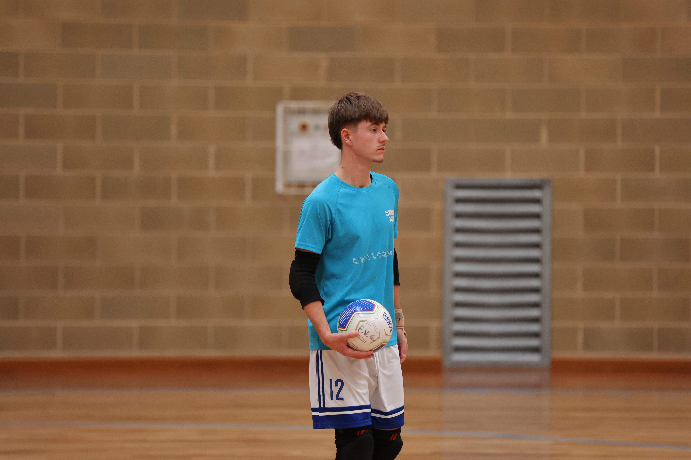

I giovani seggiolai difendono con applicazione e raccolgono una clamorosa rimonta nel finale del primo tempo, ma le Eagles ne hanno di più
La replica del derby va sempre alle Eagles. La formazione U19 di Cividale supera con merito il Manzano. Padroni di casa che ci mettono il cuore in difesa, ma faticano troppo nella creazione del gioco. Un fatto normale per una rosa rinnovata che si appoggia tanto alla spina dorsale formata dal portiere Saro, Avitabile e Kabine, questi 2 quasi sempre in campo per 40’.
Primo tempo che pende sul 2-0 per le Eagles, poi un ultimo minuto folle regala il pari al Manzano. Centro di Kabine, eurogol di Marmi Salah. La ripresa viene approcciata con fiducia ma le Eagles vanno sul 3-2. Gli ospiti non ammazzano la partita, anche se i seggiolai faticano a costruire palle gol concrete. Nell’ultimo minuto arriva il poker della sicurezza cividalese.
PRIMO TEMPO – Le Eagles prendono subito il controllo del campo. Manzano che si schiaccia e subisce dai primi minuti. Provvidenziale il recupero difensivo di Bon che anticipa l’uomo in area, poi sale in cattedra Saro, in spaccata su Tullio.
Proprio Tullio, è il più pericoloso dei suoi, anche se il capitano del Cividale spreca diverse ripartenze puntando sul gioco personale, invece che allargare per i compagni.
Il Manzano difende con grinta ma fatica a giocare palla a terra, le situazioni offensive si creano col lancio lungo. In uno di questi Avitabile pesca Kabine a tu per tu con Abis, il suo tiro si stampa sul palo ed è il primo squillo del Manzano.
Gol sbagliato, gol subito. Al 7’ Tullio scambia e si smarca sulla destra, trovando il gol nel sette con un tiro d’interno.
Padroni di casa in bambola: Tullio pesca Fevereiro in area che spara alle stelle solo davanti a Saro. Il portiere del Manzano tiene a galla i suoi con vari interventi su Fevereiro, Tullio e Clinori. Seggiolai che si appoggiano ancora a Kabine in fase offensiva ben innescato dal lancio di Saro, puntuale l’uscita di Abis che lo mura.
A 5’ dal gong Fevereiro riceve dal limite su corner, il suo tiro deviato vale il 2-0.
La squadra di casa rischia di capitolare del tutto. Nell’ultimo minuto Bon si immola con il corpo ed evita 2 gol già fatti a Saro battuto. La squadra riparte rapidamente e finalizza il contropiede con Kabine: 1-2.
Prima della sirena arriva un clamoroso 2-2. Marmi Salah riceve sulla trequarti da posizione decentrata, elude la marcatura con delle finte di corpo e si libera lo spazio per il tiro, trovando il gol della domenica sotto l’incrocio dei pali.
SECONDO TEMPO – Il pareggio insperato rinvigorisce il Manzano che continua la sua partita difensiva. Saro deve intervenire su Casarsa e Clinori. Le occasioni manzanesi passano da Kabine, pericoloso sui piazzati.
Al 5’ Tullio riceve sul lato e supera Saro con una botta sotto l’incrocio del primo palo. Cividale prova ad andare subito sul +2, ma Saro trova un riflesso di piede sul colpo ravvicinato di Clinori, servito da Tobu.
Per il resto le Eagles mantengono il controllo, anche se non riescono ad arrotondare il risultato. Tullio e Fevereiro prendono 2 pali, il giovane pivot divora pure due gol con la porta semivuota. Occasioni anche per Tobu e Comunello. Manzano che si affida ancora al lancio lungo, creando pochi pericoli. L’unico degno di nota vede Kabine innescare Bon, ben chiuso da Abis.
Nell’ultimo minuto ripartenza in 2 contro zero guidata da Tullio che serve Halili, liberissimo di appoggiare il definitivo 4-2.
Prossimo turno in trasferta domenica prossima sul campo del Maccan Prata, appena sconfitto di misura dalla capolista (insieme alla Came Treviso) Marca Futsal.